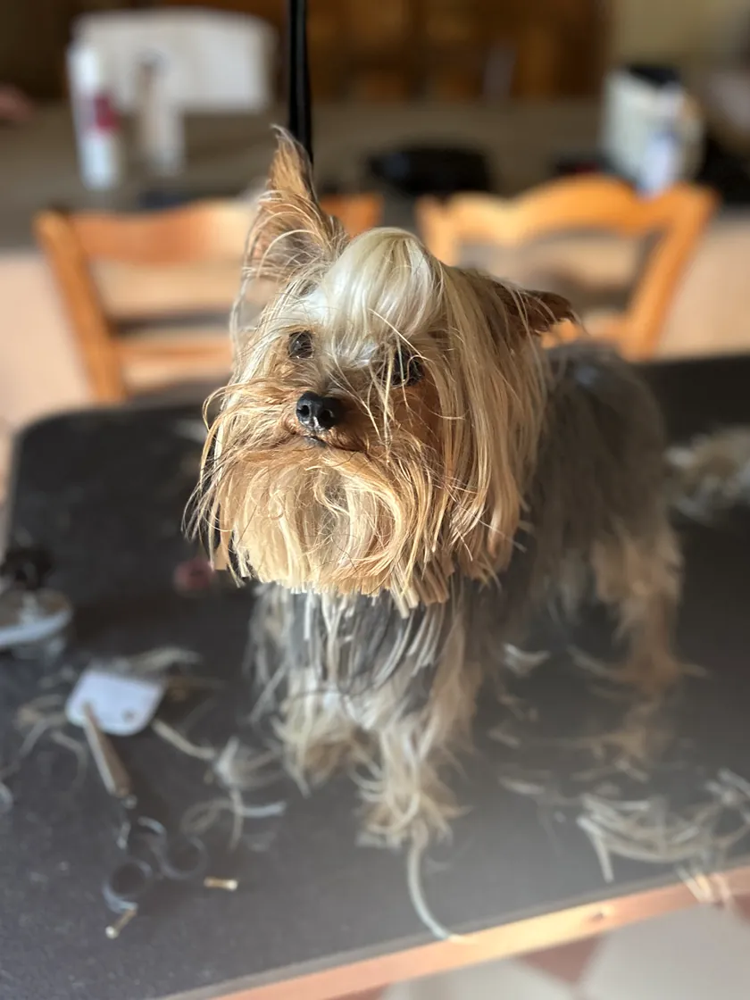
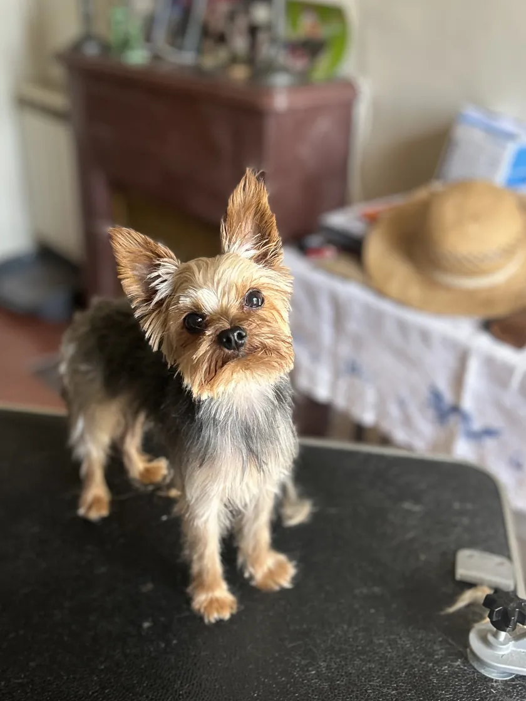
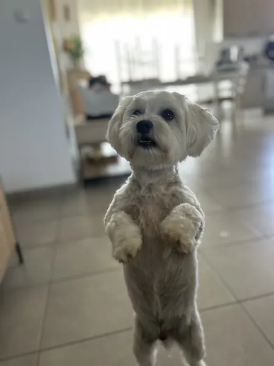
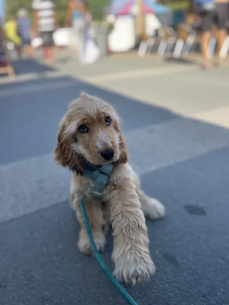
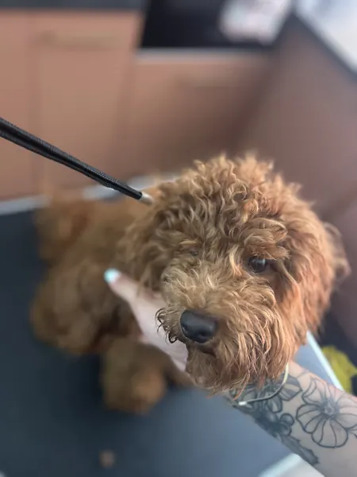
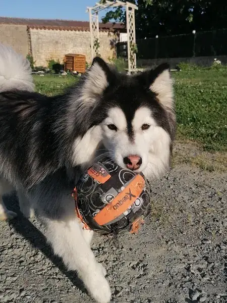

Toilettage à domicile · Sud Vendée
Bulle de poils, toilettage pour chiens et chats à domicile autour de Mouzeuil-Saint-Martin
Votre chien ou votre chat se fait chouchouter sans quitter la maison. Toiletteuse diplômée, je viens chez vous avec mon matériel, dans un rayon de 30 km autour de Mouzeuil-Saint-Martin.
5,0 8 avis GoogleLe toilettage qui vient à vous
Votre salon de toilettage, c'est votre salon
Plus besoin de mettre votre compagnon en voiture ni de le laisser dans une salle d'attente. Je m'installe chez vous et je m'occupe de lui sur place, dans le respect de son bien-être.
Bain, tonte, coupe aux ciseaux, épilation, démêlage, débourrage : chaque prestation est adaptée à votre animal, petit ou grand, chien ou chat.
Mary toiletteuse diplômée
- Zéro trajetPas de voiture, pas de cage de transport.
- Dans ses repèresSes odeurs, son panier, sa maison : de quoi rassurer les plus inquiets.
- Rien que pour luiUn seul animal à la fois, sans précipitation.
Avant, après
Une séance, et le regard revient
Ce petit Yorkshire avait les poils dans les yeux et une robe qui traînait. Après son toilettage, sur sa table installée à la maison : coupe courte, oreilles bien nettes et le regard dégagé.
Touchez la photo pour souffler la bulle et découvrir l'après.


Les soins
Pour chaque pelage, la bonne mousse
Choisissez votre compagnon pour voir les soins qui le concernent, puis ajoutez-les à votre demande de rendez-vous.
-
Bain & séchage
Shampoing adapté au pelage, rinçage soigneux, puis séchage et brossage.
-
Tonte
Une coupe courte et nette à la tondeuse, toute en douceur.
-
Coupe aux ciseaux
Pour les finitions et les pelages qui se travaillent au ciseau, selon la race et vos envies.
-
Épilation
Pour les races à poil dur : on retire le poil mort pour garder une belle texture.
-
Démêlage
Les nœuds sont défaits patiemment, au peigne et à la brosse.
-
Débourrage
On retire le sous-poil mort, bien utile au moment de la mue.
-
Soins d'hygiène
Les petites finitions de propreté qui gardent votre compagnon confortable.
Chaque animal est différent : le tarif dépend de sa taille, de son pelage et des soins choisis. Je vous l'indique au moment de la prise de rendez-vous, au 06 30 64 80 93.
La tournée
Est-ce que je passe par chez vous ?
Je me déplace dans un rayon de 30 km autour de Mouzeuil-Saint-Martin : Luçon, Fontenay-le-Comte, Nalliers, Mareuil-sur-Lay et tous les villages autour. Tapez votre commune, ou touchez un point de la carte.
moins de 30 km au-delà Mouzeuil-Saint-Martin
Où habitez-vous ?
Le résultat s'affiche ici, avec la distance depuis Mouzeuil-Saint-Martin.
Les communes les plus demandées
Les clients à quatre pattes
Tout propres, tout doux
-

Debout pour la photo -

Oreilles de velours -

Tout en boucles -

Le ballon d'abord
Rendez-vous
Votre demande, prête à envoyer
Quelques choix, et votre message s'écrit tout seul. Il ne reste qu'à l'envoyer par SMS à Mary, qui vous rappelle pour fixer le jour de son passage.
Questions fréquentes
Ce qu'on me demande souvent
Comment se passe un toilettage à domicile ?
Je viens chez vous le jour convenu, avec mon matériel. Votre compagnon est toiletté sur place : pas de trajet en voiture, pas d'attente dans un salon, et il retrouve son panier dès la séance terminée.
Quels animaux acceptez-vous ?
Les chiens et les chats, petits et grands, de toutes races.
Jusqu'où vous déplacez-vous ?
Dans un rayon de 30 km autour de Mouzeuil-Saint-Martin, notamment à Luçon, Fontenay-le-Comte, Nalliers et Mareuil-sur-Lay. Vérifiez votre commune sur la carte de la tournée, ou appelez simplement le 06 30 64 80 93.
Combien coûte un toilettage ?
Le tarif dépend de la taille de l'animal, de son pelage et des soins choisis. Je vous l'indique au moment de la prise de rendez-vous.
Quels sont vos horaires ?
Je me déplace sur rendez-vous du lundi au samedi, de 9 h à 18 h 30.
Comment prendre rendez-vous ?
Par téléphone ou par SMS au 06 30 64 80 93. Le formulaire du site prépare le message pour vous : animal, soins, commune et disponibilités.
Horaires & contact
On se dit à bientôt ?
Horaires
Déplacements sur rendez-vous uniquement
| Lundi | 9 h – 18 h 30 |
|---|---|
| Mardi | 9 h – 18 h 30 |
| Mercredi | 9 h – 18 h 30 |
| Jeudi | 9 h – 18 h 30 |
| Vendredi | 9 h – 18 h 30 |
| Samedi | 9 h – 18 h 30 |
| Dimanche | Repos |
Contact
- 06 30 64 80 93Appel ou SMS, pour prendre rendez-vous
-
Basée au 5 rue du Stade
85370 Mouzeuil-Saint-MartinToilettage chez vous, à 30 km à la ronde - La fiche Google MapsPhotos, horaires et avis
Les avis
5,0
La note de Bulle de poils sur Google, sur 8 avis. Votre animal a été chouchouté ? Votre avis aide les voisins à me trouver.